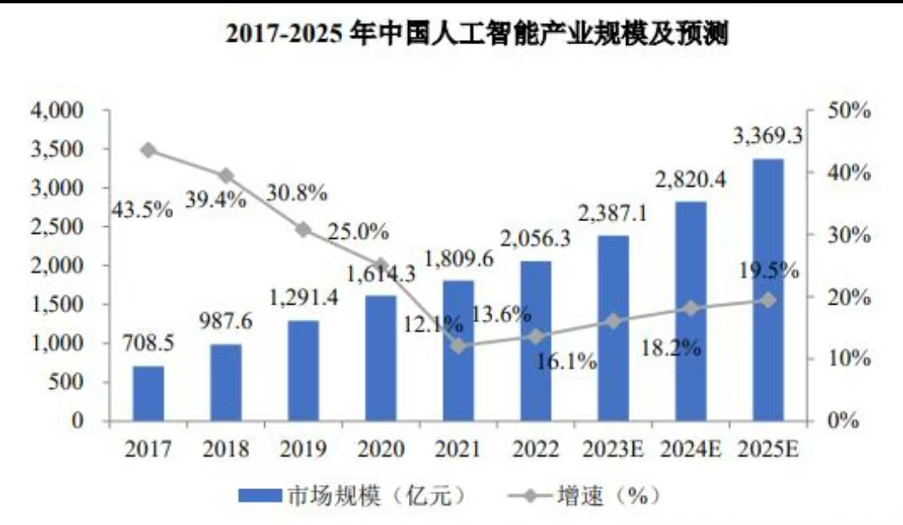

中国人工智能发展现状呈现出强劲的增长态势。中国政府高度重视AI技术的发展，并将其纳入国家战略层面，如“新一代人工智能发展规划”。近年来，中国在基础研究、技术创新、应用推广等方面取得了显著进展： 技术积累：中国拥有世界上最大的数据集和计算资源，这为深度学习等AI技术的发展提供了强有力的支持。 企业崛起：阿里巴巴、腾讯、百度等科技巨头在全球AI领域处于领先地位，他们在语音识别、图像处理、自然语言处理等领域有着深厚的技术实力。 行业应用广泛：从智慧城市到医疗健康，再到自动驾驶，AI在中国各行各业都有深入的应用，推动了产业升级和社会效率提升。 政策扶持：政府出台了一系列政策鼓励AI创新，包括资金支持、人才培养以及知识产权保护等措施。 然而，尽管如此，中国在高端芯片、关键算法以及AI原创性方面仍面临一些挑战。总的来说，中国人工智能正在快速发展并逐渐成为全球AI竞争的重要力量。
